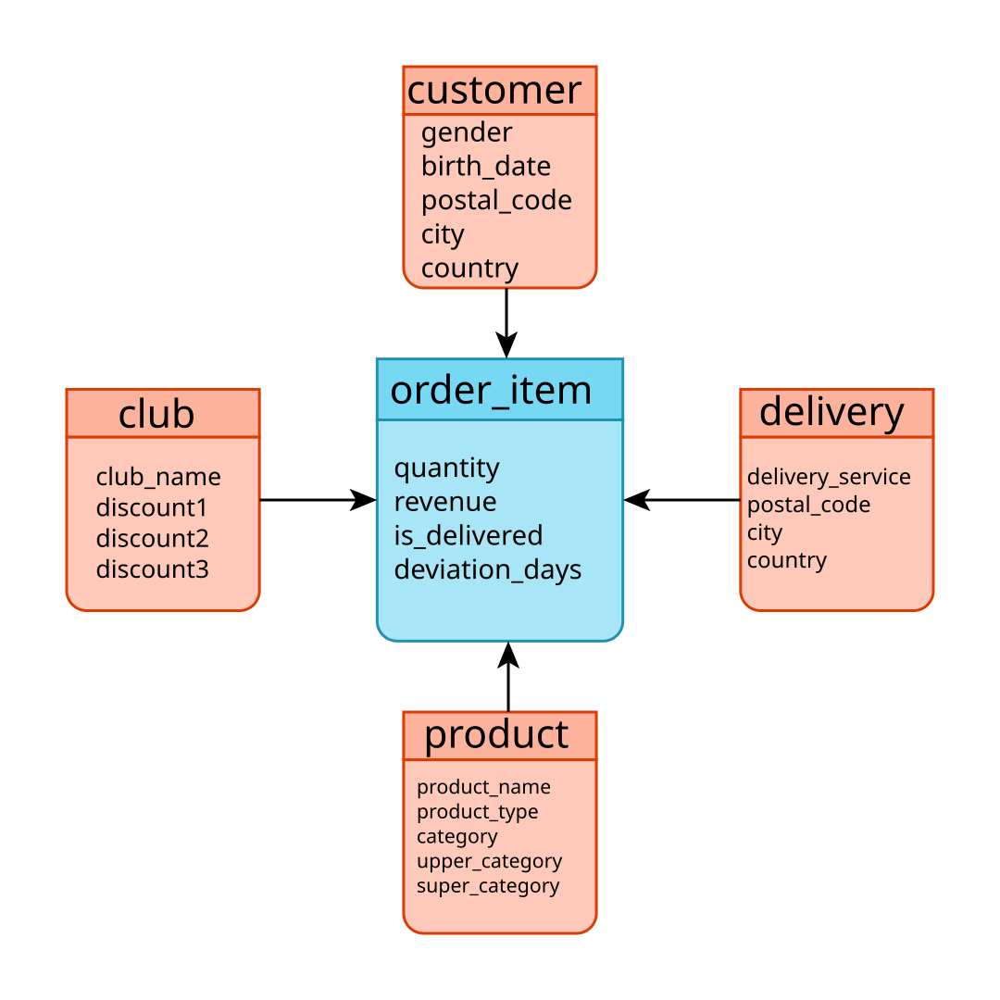

Übung Business Intelligence
Aufbau von Dimensionen und Fakten
Aufgabenstellung - Datenmodellierung
Modellieren Sie ein Sternschema auf das Willibald-DWH-Datenmodell.
- Welche Fakten können Sie identifizieren?
- Welche Dimensionen können Sie identifizieren?
Fachliche Hinweise zur Modellierung (1/2)

- Menge: Die Menge bestellter Produkte. Wird direkt aus der Bestellposition übernommen.
- Erlös: Der Betrag, welcher für die bestellte Produktmenge zu bezahlen ist. Hierzu werden Menge und Preis aus der Bestellposition multipliziert und anschließend der Rabatt abgezogen.
- Offener Auftrag: Eine 1 kennzeichnet, ob dieser Auftrag noch offen ist.
- Vollständig gelieferter Auftrag: Eine 1 kennzeichnet, ob dieser Auftrag vollständig geliefert wurde.
- Abweichung zwischen Wunsch- und Lieferdatum: Errechnet sich aus der Bestellung.Wunschdatum und dem letzten Lieferung.LieferDatum. Die Abweichung ist negativ, wenn die Lieferung vor dem Wunschtermin erfolgte.
Fachliche Hinweise zur Modellierung (2/2)
- Es existieren zwei Links zwischen den Hubs Kunde und Vereinspartner
- lnk_kunde_vereinspartner enthält alle Kunden, die einem Vereinspartner zugeordnet sind.
- lnk_vereinspartner_kunde definiert welcher Kunde als Ansprechpartner des Vereinspartners agiert.
-
In jeder Tabelle existieren technische Felder, die Sie bei der Modellierung des
Sternschemas ignorieren können:
- businessobject_sk
- source_row_id
- audit_trail_id
- change_data_indicator
- checksum
Beispielsternschema

Aufgabenstellung - ELT Entwicklung
Implementieren Sie das von Ihnen modellierte Sternschema in dbt.
- Legen Sie Ihr Datenmodell im Schema "dm_ol" an.
- Erstellen Sie dbt-Modelle (.sql files) um Ihr Sternschema auf dem Datenbankserver zu erzeugen und zu beladen.
- Pushen Sie Ihr dbt-Projekt per git ins Github-Repository.
Hinweise zur technischen Modellierung
- Zu jedem Ladezeitpunkt (Inscription_Timestamp) werden die Produktkategoriedaten stark verändert. Alle Daten im Fakt sollen deshalb auf einen Ladezeitpunkt gefiltert werden können.
- Für Verweise von dbt-Modellen untereinander (also allen Modellen und Objekten, die im dbt-Projekt angelegt sind) kann das ref-dbt-Makro genutzt werden. Siehe das Beispielmodell my_second_dbt_model.sql
- Zum Zugriff auf die Quelltabellen im Schema dwh_sl gibt es zwei Möglichkeiten:
- Nutzung des source-Makro von dbt, wenn die yml-Dateien aus der vorherigen Übung korrekt angelegt wurden.
- Nutzung des physischen Objektnamens in der Datenbank. Davon sollte in einer Produktivumgebung abgesehen werden.
Wenn Übung04 erfolgreich abgeschlossen wurde und yml-Dateien angelegt sindSELECT * FROM {{ source('willibald_dwh_sats', 'sat_bestellung') }}Wenn Übung04 nicht abgeschlossen wurde, nutzen Sie den physischen Namen des QuellobjektsSELECT * FROM "willibald_dm_bis24200"."dwh_sl"."sat_bestellung"
Beispiellösung - Ladezeitstempel im Fakt
Aufbau einer Tabelle, die einen Eintrag pro Ladezeitstempel (gerundet auf Tage) im Bestellpositionssatelliten enthält.
sys_snapshot_date.sql
{{ config(materialized='table') }}
SELECT ROW_NUMBER() OVER (ORDER BY t.snapshot_date) AS snapshot_date_id,
t.snapshot_date
FROM (
SELECT DISTINCT DATEADD(DAY, 1, CAST(inscription_timestamp AS DATE)) AS snapshot_date
FROM {{ source('willibald_dwh_sats', 'sat_position') }}
) t
Beispiellösung - Point in Time (PIT) Tabelle
Alle für das Sternschema relevanten Daten, werden in eine sehr breite Tabelle geschrieben. Diese hat die Granularität aller Bestellpositionen pro Ladedatum.
pit_bestellposition.sql
Beispiellösung - Integration der Daten
Die Daten aus dem Webshop und der Roadshow, werden in einer View auf die PIT zusammengeführt.
In einem realen Projekt sollte dieser Schritt mithilfe von Business Vault Entitäten erledigt werden.
int_bestellposition.sql
SELECT snapshot_date_id,
snapshot_date,
menge,
preis,
COALESCE(rabatt_position, rabatt_bestellung) AS rabatt,
bestelldatum,
wunschdatum,
kaufdatum,
lieferdatum,
RANK() OVER (ORDER BY produkt_sk, produkt_inscription_timestamp, produkttyp_sk, produkttyp_inscription_timestamp, kategorie_sk, kategorie_inscription_timestamp, oberkategorie_sk, oberkategorie_inscription_timestamp, superkategorie_sk, superkategorie_inscription_timestamp) AS dim_product_sk,
produkt_bezeichnung,
produkttyp_bezeichnung,
kategorie_name,
oberkategorie_name,
superkategorie_name,
RANK() OVER (ORDER BY lieferung_sk, lieferung_inscription_timestamp, lieferdienst_sk, lieferdienst_inscription_timestamp, lieferadresse_lieferung_sk, lieferadresse_lieferung_inscription_timestamp, lieferadresse_position_sk, lieferadresse_position_inscription_timestamp, lieferadresse_bestellung_sk, lieferadresse_bestellung_inscription_timestamp) AS dim_lieferung_sk,
lieferdienst_name,
COALESCE(lieferadresse_lieferung_plz, lieferadresse_position_plz, lieferadresse_bestellung_plz) AS lieferadresse_plz,
COALESCE(lieferadresse_lieferung_ort, lieferadresse_position_ort, lieferadresse_bestellung_ort) AS lieferadresse_ort,
COALESCE(lieferadresse_lieferung_land, lieferadresse_position_land, lieferadresse_bestellung_land) AS lieferadresse_land,
RANK() OVER (ORDER BY vereinspartner_bestellung_sk, vereinspartner_bestellung_inscription_timestamp) AS dim_vereinspartner_sk,
vereinspartner_id,
rabatt1,
rabatt2,
rabatt3,
RANK() OVER (ORDER BY kunde_sk, kunde_inscription_timestamp, kunde_wohnort_sk, kunde_wohnort_inscription_timestamp, kunde_kreditkarte_sk, kunde_kreditkarte_inscription_timestamp, kunde_kreditkarte_wohnort_sk, kunde_kreditkarte_wohnort_inscription_timestamp) AS dim_kunde_sk,
COALESCE(kunde_geschlecht, kunde_kreditkarte_geschlecht) AS geschlecht,
COALESCE(kunde_geburtsdatum, kunde_kreditkarte_geburtsdatum) AS geburtsdatum,
COALESCE(kunde_wohnort_plz, kunde_kreditkarte_wohnort_plz) AS plz,
COALESCE(kunde_wohnort_ort, kunde_kreditkarte_wohnort_ort) AS ort,
COALESCE(kunde_wohnort_land, kunde_kreditkarte_wohnort_land) AS land
FROM {{ref('pit_bestellposition')}}
Beispiellösung - Fakten und Dimensionen (1/2)
Jetzt können die Daten der einzelnen Dimensionen- und Faktentabellen einfach aus dem dbt-Modell int_bestellposition "herausgeschnitten" werden:
fact_order_item.sql
{{ config(materialized='table') }}
SELECT t.snapshot_date_id AS dim_snapshot_id,
ddb.date_id AS dim_order_date_id,
ddw.date_id AS dim_delivery_requested_date_id,
ddk.date_id AS dim_purchase_date_id,
ddl.date_id AS dim_delivery_date_id,
t.dim_product_sk AS dim_product_id,
t.dim_lieferung_sk AS dim_delivery_id,
t.dim_vereinspartner_sk AS dim_club_id,
t.dim_kunde_sk AS dim_customer_id,
t.menge AS quantity,
(t.menge * t.preis) - t.rabatt AS revenue,
CASE WHEN t.lieferdatum IS NOT NULL THEN 1 WHEN t.kaufdatum IS NOT NULL THEN 1 ELSE 0 END AS is_delivered,
DATEDIFF(DAY, t.lieferdatum, t.wunschdatum) AS deviation_delivered_requested_days
FROM {{ ref('int_bestellposition') }} t
LEFT JOIN {{source('willibald_data_mart', 'dim_date')}} ddb
ON ddb.date_value = t.bestelldatum
LEFT JOIN {{source('willibald_data_mart', 'dim_date')}} ddw
ON ddw.date_value = t.wunschdatum
LEFT JOIN {{source('willibald_data_mart', 'dim_date')}} ddk
ON ddk.date_value = t.kaufdatum
LEFT JOIN {{source('willibald_data_mart', 'dim_date')}} ddl
ON ddl.date_value = t.lieferdatum
dim_club.sql
{{ config(materialized='table') }}
SELECT DISTINCT t.dim_vereinspartner_sk AS dim_club_id,
t.vereinspartner_id AS club_name,
t.rabatt1 AS discount1,
t.rabatt2 AS discount2,
t.rabatt3 AS discount3
FROM {{ ref('int_bestellposition') }} t
dim_customer.sql
{{ config(materialized='table') }}
SELECT DISTINCT t.dim_kunde_sk AS dim_customer_id,
t.geschlecht AS gender,
t.geburtsdatum AS birth_date,
t.plz AS postal_code,
t.ort AS city,
t.land AS country
FROM {{ ref('int_bestellposition') }} t
Beispiellösung - Fakten und Dimensionen (2/2)
dim_delivery.sql
{{ config(materialized='table') }}
SELECT DISTINCT t.dim_lieferung_sk AS dim_delivery_id,
t.lieferdienst_name AS delivery_service,
t.lieferadresse_plz AS postal_code,
t.lieferadresse_ort AS city,
t.lieferadresse_land AS country
FROM {{ ref('int_bestellposition') }} t
dim_product.sql
{{ config(materialized='table') }}
SELECT DISTINCT t.dim_product_sk AS dim_product_id,
t.produkt_bezeichnung AS product_name,
t.produkttyp_bezeichnung AS product_type,
t.kategorie_name AS category,
t.oberkategorie_name AS upper_category,
t.superkategorie_name AS super_category
FROM {{ ref('int_bestellposition') }} t
dim_snapshot.sql
{{ config(materialized='table') }}
SELECT t.snapshot_date_id AS dim_snapshot_id,
t.snapshot_date
FROM {{ref('sys_snapshot_date')}} t
Beispiellösung - Datumsdimensionen (1/2)
Im Fakt sind vier Datümer angelegt: Bestell-, Wunsch-, Kauf- und Lieferdatum. Gängige OLAP- und BI-Tools erwarten pro Datum eine Dimension. Aus der Datumsdimensions-Tabelle werden deshalb vier Views abgeleitet:
dim_delivery_date.sql
SELECT date_id AS dim_delivery_date_id,
date_value,
date_iso,
"day",
day_of_week,
week,
"month",
quarter,
"year",
day_of_year,
day_text,
month_text,
quarter_text,
day_text_abbrev,
month_text_abbrev,
is_holiday,
is_vacation
FROM {{source('willibald_data_mart', 'dim_date')}}
dim_delivery_requested_date.sql
SELECT date_id AS dim_delivery_requested_date_id,
date_value,
date_iso,
"day",
day_of_week,
week,
"month",
quarter,
"year",
day_of_year,
day_text,
month_text,
quarter_text,
day_text_abbrev,
month_text_abbrev,
is_holiday,
is_vacation
FROM {{source('willibald_data_mart', 'dim_date')}}
Beispiellösung - Datumsdimensionen (2/2)
dim_order_date.sql
SELECT date_id AS dim_order_date_id,
date_value,
date_iso,
"day",
day_of_week,
week,
"month",
quarter,
"year",
day_of_year,
day_text,
month_text,
quarter_text,
day_text_abbrev,
month_text_abbrev,
is_holiday,
is_vacation
FROM {{source('willibald_data_mart', 'dim_date')}}
dim_delivery_purchase_date.sql
SELECT date_id AS dim_delivery_purchase_date_id,
date_value,
date_iso,
"day",
day_of_week,
week,
"month",
quarter,
"year",
day_of_year,
day_text,
month_text,
quarter_text,
day_text_abbrev,
month_text_abbrev,
is_holiday,
is_vacation
FROM {{source('willibald_data_mart', 'dim_date')}}
Beispiellösung - Erläuterungen
- Über die RANK()-Funktion wird ein technischer Schlüssel für die Marts gebildet.
Implementierung in dbt
In dbt müssen lediglich für jede Tabelle / View eine *.sql-Datei im Projektordner unter "models" angelegt werden.
Anschließend kann mit dbt run das Sternschema auf dem Server angelegt werden.

Ergebnis der Übung
- Ihre Übungsdatenbank enthält Dimensionen- und Faktentabellen und diese enthalten Daten aus dem DWH.
- Die Faktentabelle sollte auf Granularität der Bestellposition pro Ladezeitpunkt sein.
- Im main-Branch Ihres Github-Repository ist das dbt-Modell entsprechend implementiert